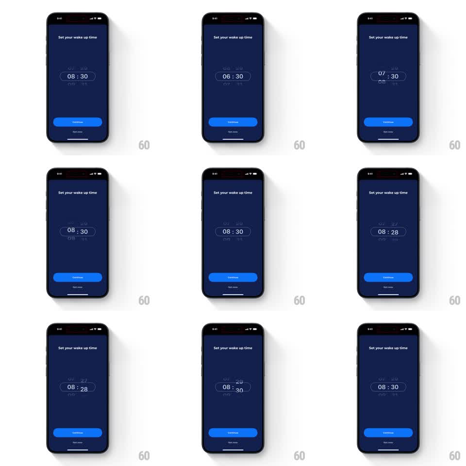

Media
Frame-by-frame

Rebuild this interaction 1:1: ShutEye's wake-time picker - a cylindrical drum of hours and minutes that scales the centered value up and its neighbors down, with springy snap and haptic-feeling detents.

Rebuild this interaction 1:1: ShutEye's wake-time picker - a cylindrical drum of hours and minutes that scales the centered value up and its neighbors down, with springy snap and haptic-feeling detents. ## Integration Integration: stack-agnostic spec - springs given as stiffness/damping, timed motions as duration + curve; map every value to your framework and animation library of choice. ## Scene A dark navy "Set your wake up time" screen. At center, a time readout (08:30) rendered as two vertical drums - hours and minutes - where the selected value sits large and bright in a selection window and adjacent values shrink and dim above and below, curving away like a cylinder. A "Continue" button sits at the bottom. ## Motion spec Pattern: cylindrical drum picker, gesture-driven. - The drum tracks the vertical drag 1:1, values flowing through the selection window. - Values scale and fade by distance from center: the centered value is full size and bright, neighbors shrink to 70% and 40% opacity, the next ring to 45% and 20%, simulating a cylinder curving away. - On release, the drum snaps to the nearest value (spring stiffness 350 damping 24) with a small overshoot; flicks carry momentum that decays over 500-800ms. - Each value crossing the center during a spin pops briefly in brightness - the detent feel. ## Calibration - The snap overshoot is tiny (a few pixels) but must be visible - that is the tactile part. - Hours and minutes are independent drums with identical physics. ## Reduced motion Drum scrolls without momentum or overshoot. ## Don't miss - The selection window is implied by scale and brightness alone - no visible rectangle. - Values tilt subtly as they recede (rotateX up to 35 degrees at the edges).